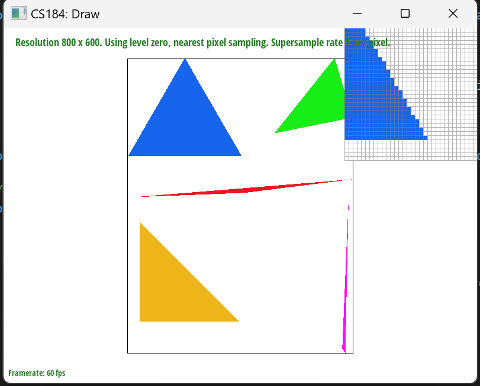
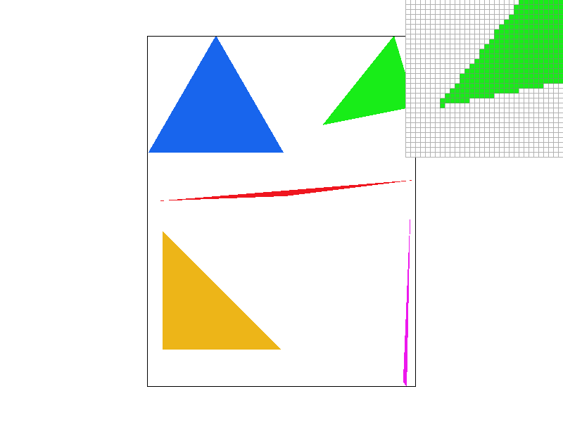
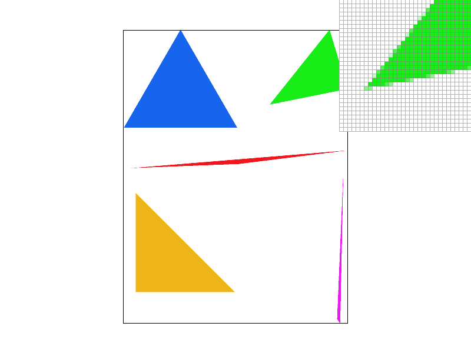
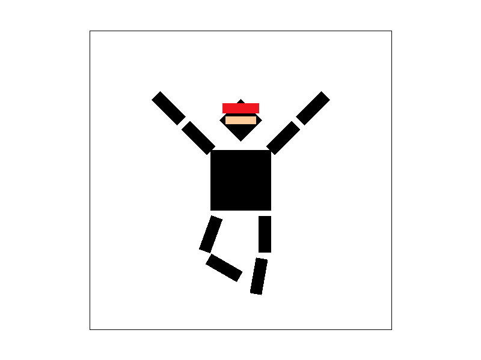
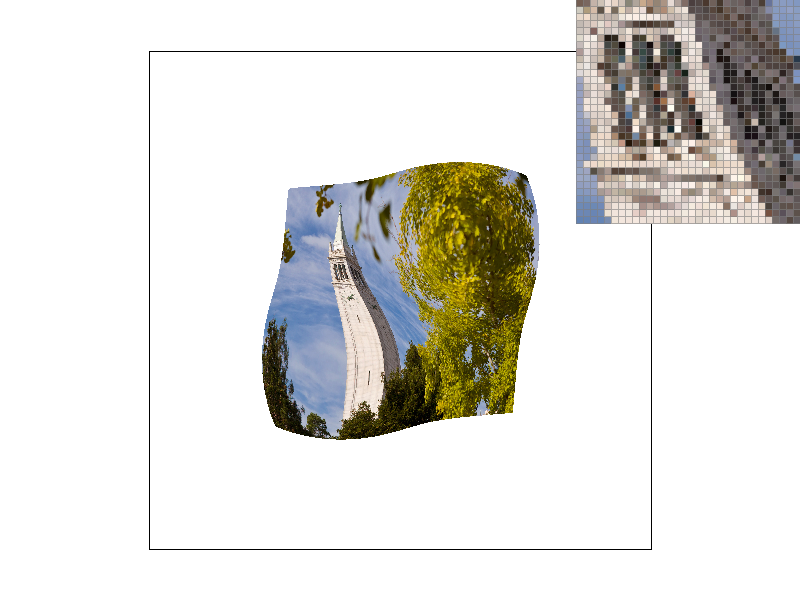

In this homework, I implemented a variety of image display and filtering functions, then tested them out on a number of images to see their effects.
Grader's Note: No extra credit was attempted for all six problems -- I just did the basic requirements.The main operation of rasterizing a triangle comes down to checking if a point lies within the triangle. In order to check this, I used the simple three-line equation from Lecture 2. For this test, for each line that defines the triangle, we check if the line is "inside" or "outside" it. Correctly ordering the points was a difficulty I had, as incorrect ordering leads to inverted inside-outside determinations.
I wanted to make sure my function wasn't checking unneeded points, so I generated a bounding box for it. To generate the triangle's bounding box, the function first finds the maximum and mimumum X and Y values of the three input points. Then, it can simply check each of those points for interiority by running each through the three-line equation. It is therefore exactly as efficient as one that checks every point within the bounding box, as that was my approach. A possible way to raise efficiency would have been to use incremental triangle traversal, which checks fewer points.
To supersample, I reused the three-line test from Problem 1, but this time split each pixel at decimal increments. For example, a 4x supersample
splits at one-third and two-thirds.
I updated the sample array to contain sample_rate times as many elements, with the element at
position sample_rate * (y * width + x) + sub corresponding to subsample number sub at a
given pixel. Then, when rendering, I iterate through the sample buffer and average the subsamples to create each
pixel. In this way, I can express the multi-dimensional data in one dimension.
Subsampling is useful because it allows for non-binary detail, which reduces jaggies and therefore improves overall visual quality. The supersampling method I implemented allows for points near the edge of an object to express more detail, which comes across to the eye as almost "sub-pixel" quality without actually needing more pixels.
This naturally required updating every change to and access of the sample buffer with this new subdivided
coordinate system, including changes to fill_pixel, rasterize_triangle,
set_sample_rate, and set_framebuffer_target.
The images below show the practical effect of supersampling on a sharp corner.
A sampling rate of 1 below. Notice the serious jaggies on the green triangle's thin point. This occurs because the point defining the triangle's vertex is just short of touching the pixel, leaving the point in an unnatural shape.
A sampling rate of 4 below. The point is better now, having a few lighter-colored pixels to make the transition from white to green less jarring, though the top of the triangle is still bumpy.
A sampling rate of 16 below. The top is now very smooth, as is the point and bottom edge.

I have my cubeman dressed up as a ninja doing a "crane" pose! Aside the posing, I added a red headband and an eyehole in the mask.
Barycentric coordinates work by setting each vertex of a triangle to have a color, and then displaying a mixture of those colors when a location on the triangle is sampled. Specifically, the distance from the sampled point on the face to the vertex determines the effect of that vertex's color on the result color, with locations closer to a given vertex expressing that vertex's color more strongly.
Consider the below image. The top-left point is set to red, the bottom to green, and the right to blue. In the middle, the triangle's display colors are defined by a mixture of the colors. This becomes gray in the center, as when R, G, and B are exactly equal, you create a shade of gray.
Using this technique, we can create a variety of smooth color transitions, such as test7.png shown below.
Pixel sampling uses UV coordinates to map a location on a triangle into a location in an image. Then, when you then render the triangle with nearest filtering, it uses a barycentric interpolation on the UV coordinates of the triangle's vertices to get more precise UV coordinates for that specific location. Then, it returns the color of the closest pixel at that location in the texture image.
As an additional step in bilinear filtering, instead of merely returning the color of the nearest pixel to the calculated UV coordinate, instead the four closest pixels are all checked. Their colors are interpolated between using ReLU, with the texture pixels closer to the calculated UV having increased weight. This applies a smoothing effect that lessens sudden changes in color.
This is demonstrated by the four images below.
With no filtering, the windows of the Campanile are a jaggy mess, filled with black and brown spots.
With filtering, the windows are easier to make out, with many of the dark spots gone.
With no filtering but 16x supersampling, the quality increases, though so does the computation time.
With filtering and 16x supersampling, the image is much easier to make out.
In these example images, the largest improvement from filtering comes at low sampling rates, as it prevents a single dark-colored pixel from having an outsized effect on the final image. The averaging applied by the filtering smooths the final image out and makes connected textures easier to make out. When already supersampled, however, this benefit is less noticable, as supersampling also has a smoothing effect.
Level sampling takes pixel sampling a step further using mipmaps. Mipmaps are multiple quality levels of a specific texture, so that tris that don't need as complex a texture to look acceptable can use less processing power. In this instance, each tri's UV distance over the texture image is measured, and then plugged into the formula from lecture 5. This returns a mipmap level to use to render that triangle.
Pixel sampling is the least intensive, but as shown earlier, can have quality issues. A single dark pixel can, when sampled, dominate a space, creating muddy and jaggy images in some instances.
Level sampling requires more memory to save the mipmap, but prevents the need to use the full-quality image every time a triangle is rendered. This speeds up the rendering operation, but necessarily leads to a minor loss in quality as the lower quality images lack equivalent detail. This can actually work in one's favor, however, as doing this compression may remove visual artifiacts.
Sampling multiple times per pixel, a.k.a. supersampling, is another way to remove artifacts and effectively smooth images. It has the benefit of reducing jaggies as well. However, it is very resource intensive, requiring essentially 4x as many operations be done in the same time for the very lowest supersampling level, or exponentially more for higher levels.
A picture with L_ZERO and P_NEAREST.
A picture with L_ZERO and P_LINEAR.
A picture with L_NEAREST and P_NEAREST.
A picture with L_NEAREST and P_LINEAR.
This concludes Homework 1.